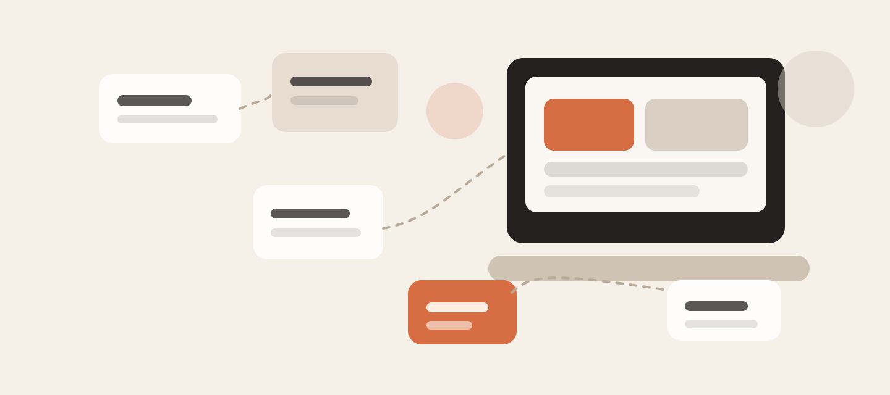
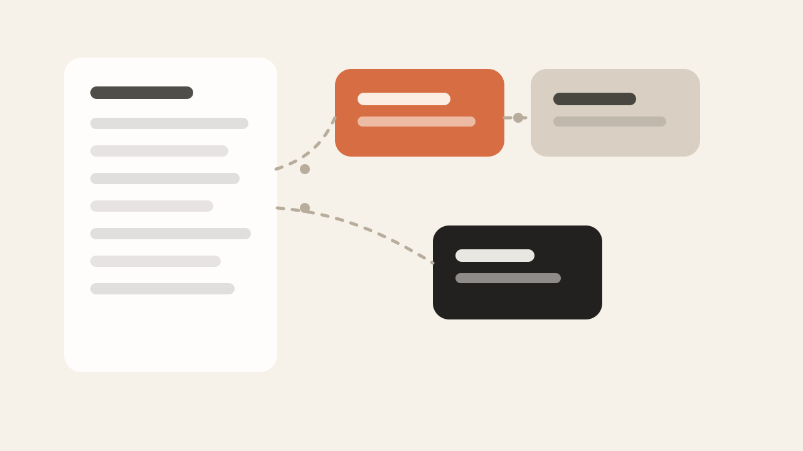
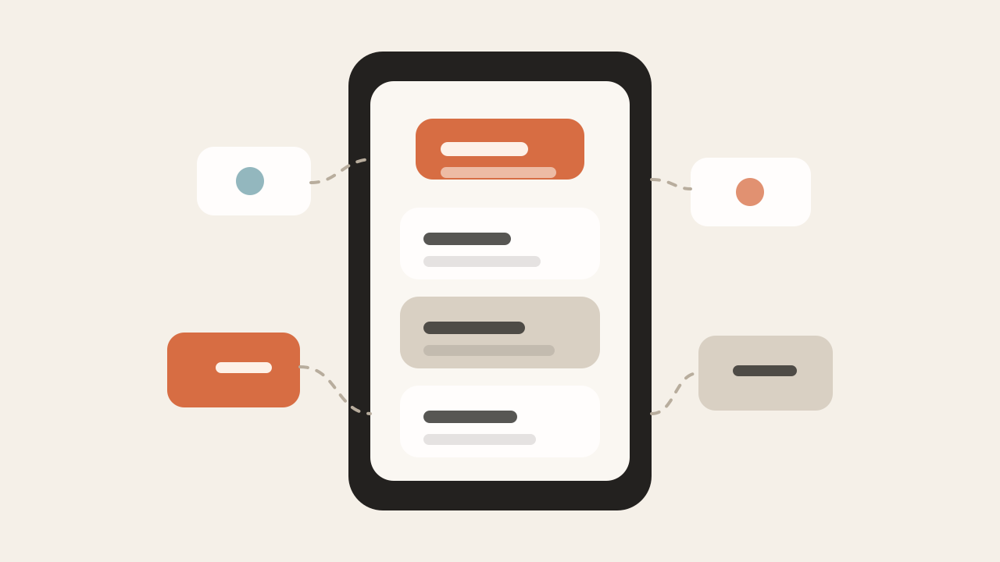
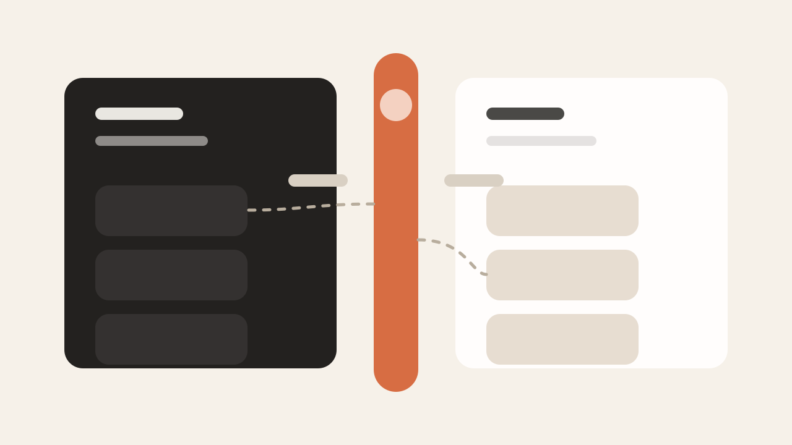

很多人第一次装上一个 AI Agent，都会经历同一个阶段：
兴奋地打开。
看一圈界面。
脑子里冒出一句话：
“所以……我到底该拿它做什么？”
我对 Hermes Agent 的感觉，最开始也是这样。
那段时间，时间线上全是多智能体、Mac Mini、各种本地部署和新工具的讨论。看得人很热闹，但真轮到自己上手时，反而容易卡住：
这个问题如果想不清楚，Agent 很容易沦为一个看起来很强、实际上很少打开的工具。
所以这篇文章，我不想讨论哪家模型最强，也不想讨论要不要先买硬件。
我更想讲另一件更关键的事：
普通人到底该怎么找到，属于自己的 Agent 用法。

很多人一上来就会先问：
Telegram、TUI、自动化链路这些问题当然都重要。
但如果你还没想清楚“它应该帮你做什么”，那这些都只是更复杂的前置准备。
对我来说，真正开始把 Hermes 用起来，是从一个很简单的方法开始的：
把自己一天做的事写下来。
不是写理想中的工作流，而是写真实发生的事。
比如：
写完一天还不够，最好持续记几天，甚至一周。
因为很多真正值得交给 Agent 的事情，不一定是“最难的事”，而往往是：
那些不难，但反复出现，还会不断打断你的事。

还有一类很适合 Agent 的事，很多技术用户反而最容易忽略。
不是工作，不是写代码，而是生活里的那些“软问题”。
这些问题不酷，也不适合发炫技截图，但它们很真实。
而且它们往往比“Agent 帮我完成一个复杂任务”更容易立刻带来改变。
所以如果你不知道该从哪里开始，不妨先问自己两个问题：
很多适合 Agent 的场景，就藏在这两个问题里。
真正把思路打开之后，Agent 的用途其实会慢慢清晰起来。
我现在给自己配了一组不同角色的 Agent。重点不在“数量”，而在于它们各自解决的是不同类型的问题。
这一类 Agent，我最常拿来做研究型任务。
这里我最看重的一点是：一定要有引用。
因为我不是想让 Agent 替我形成结论，而是让它先帮我完成资料收集、方向定位和初步整理。
比如学模型量化这类事，我不需要它替我做完整个过程，但我很愿意让它先把相关论文、资料和主流方法帮我串起来，再自己去验证和动手。
也就是说，这类 Agent 更像：研究助理，而不是替身。
如果说研究 Agent 负责帮我看方向，那执行 Agent 就负责真正推进任务。
TUI这类 Agent 的价值，不在于它比你更懂，而在于它可以先把很多体力活、整理活、搭骨架的活干掉，让你直接进入判断和修正阶段。
我现在基本把技术类 Agent 分成两种：一个偏研究，一个偏执行。这样分开之后，反而比“所有事都丢给同一个 Agent”更清楚。
这个可能最容易被人吐槽。
我有一个 Agent，会定时提醒我喝水。是的，听起来很荒谬。但坦白说，非常有用。
而且很可能还会继续扩展，比如提醒我：
这类 Agent 的有趣之处在于：它不需要很聪明，也不需要很强的推理。它只要稳定、低成本、够顺手，就已经很有价值。
这也是很多人一开始低估 Agent 的地方：不是所有高价值场景都需要“最强模型”。
有些场景，便宜、稳定、够用，反而就是最优解。

还有一类我自己很重视的 Agent，是围绕长期生活问题展开的。
比如健康相关的研究、饮食相关的信息整理，或者每天做饭时的低负荷辅助。
这类 Agent 的价值，不在于“惊艳”，而在于它真的能融进日常。
很多时候，你不需要它替你做重大决策。你只需要它让日常决策少一点摩擦。而这恰恰是 Agent 最容易被做出真实价值的地方。
我自己有一个很明确的使用原则：
AI 是助理，不是替代思考的人。
我不会把判断直接交给它。我更愿意把它当成：
然后我自己再验证，再推进。
对于自动化任务，我尤其倾向于只让 AI 自动执行那些：我本来就知道怎么做、也知道怎么检查结果的事。
这条边界非常重要。因为一旦超出这个边界，Agent 就容易从“省力工具”变成“风险放大器”。

很多人一想到 Agent，就会直接联想到高额 API 账单。这也是我自己一直很警惕的事。
我非常不想把个人 Agent 系统做成一个“每天几十上百美元”才能跑起来的玩具，所以我一直在做一件事：尽量便宜地把它跑起来。
这里面的关键，不是找到一个万能模型，而是学会把不同任务分配给不同成本结构的模型。
这背后的思路其实很简单：不是所有任务都配得上最高成本。
很多人用不好 Agent，不是因为不会配，而是因为默认“所有任务都该交给最强模型”。这往往既贵，也没必要。
如果你现在也正处在“我装了 Agent，但不知道拿它干嘛”的阶段，我反而建议你别先研究这些：
你先做三件事就够了：
比如：
先把一个场景跑通。你一旦跑通一次，后面的很多用法会自己长出来。
我现在越来越觉得，很多人使用 Agent 最大的误区，不是技术不够强，而是起点放错了。
他们从硬件开始，从模型榜单开始，从别人怎么配开始。
但真正让 Agent 变得有用的，通常不是这些。
而是你愿不愿意回头看一眼自己的真实生活和真实工作：
Agent 真正有价值的时刻，不是它看起来多像未来。
而是它第一次让你觉得：
“这件事以后终于不用每次都自己从头来一遍了。”
这才是它开始真正有用的时候。